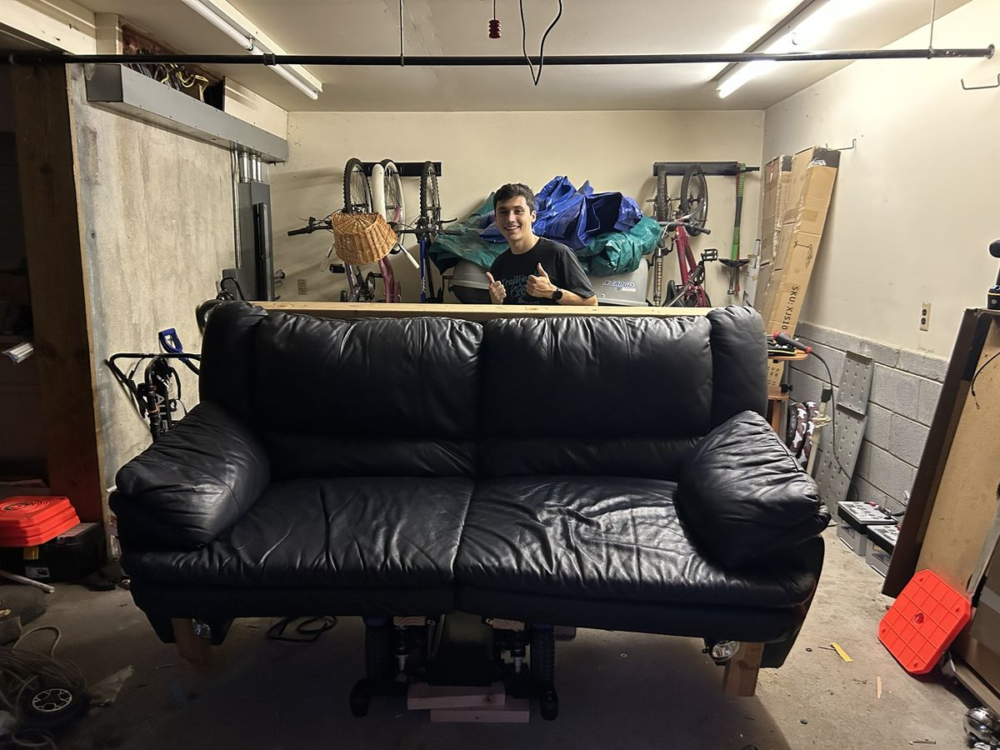

Motorized couch on a power wheelchair base
I turned a couch into a working vehicle by mounting it on a salvaged Rovi power wheelchair base and keeping the chair's own motor controller. It reaches 6 mph and gets 15+ miles of range on two 12 V batteries. I also 3D printed adapters to mount the caster wheels into the wood frame.
To drive it with an Xbox controller, an ESP32 sits inline between the joystick and the drive controller on the wheelchair's CAN bus. I logged and decoded the joystick's CAN traffic over serial, then adapted open-source firmware for this unsupported wheelchair model so the ESP32 sends matching drive commands.
I designed it to fail safe: the couch stops if the controller disconnects or the ESP32 loses power, and the original joystick still works as a manual override.
I built it on a very low budget, almost entirely from leftover parts. It isn't pretty, but it drives.
- Status
- Drives · controller upgrade in December
- Performance
- 6 mph, 15+ mile range
- Power
- Two 12 V batteries
- Drive base
- Salvaged Rovi power wheelchair
- Control
- ESP32 + Xbox controller (Bluetooth)
- Bus
- R-net, low-speed CAN (ISO 11898-3)
- Transceiver
- TJA1055 (ordered)
- Caster mounts
- 3D printed, 26 mm OD, press-fit + epoxy
- Budget
- Mostly leftover parts
- Timeline
- Summers 2025 & 2026